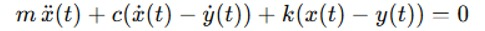
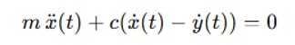
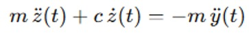
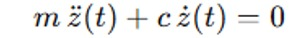
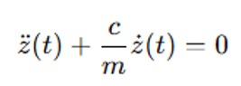
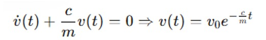
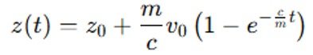
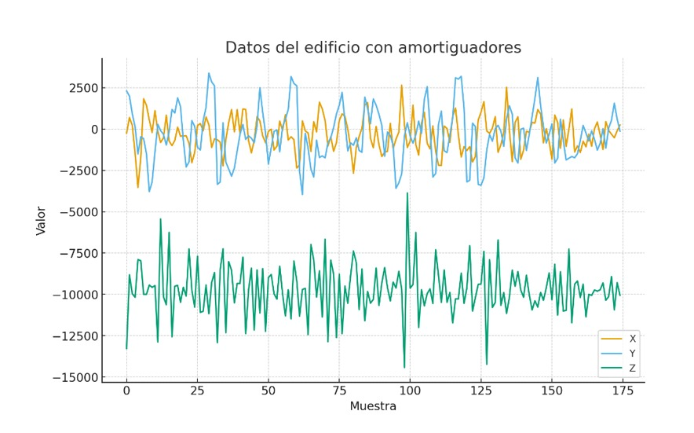
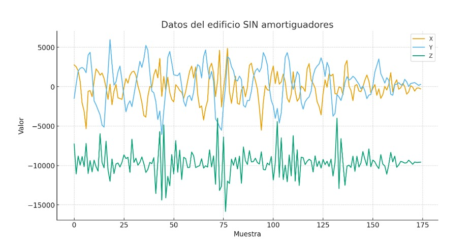

Durante un sismo, las aceleraciones del suelo se transmiten directamente a los edificios. Si una estructura está rígidamente unida a su base, las fuerzas inerciales pueden causar deformaciones o incluso el colapso.
Para reducir este efecto, se emplean técnicas de aislamiento sísmico que desacoplan el movimiento del suelo respecto al edificio. En este proyecto se construyeron dos maquetas: una sin aislamiento y otra con esferas metálicas que permiten el rodamiento entre la base y la estructura. Estas esferas disminuyen la aceleración transmitida y estabilizan el edificio.
Justificación
El comportamiento dinámico de las estructuras durante un sismo puede modelarse mediante ecuaciones diferenciales de segundo orden, basadas en la segunda ley de Newton. En este caso, se estudia un sistema sin resorte donde la masa y el amortiguamiento definen la respuesta del edificio.
El uso de acelerómetros permite comparar los datos experimentales con las soluciones teóricas, demostrando cómo las esferas metálicas reducen la aceleración y mejoran la estabilidad de la maqueta.
Objetivos
Objetivo general: Modelar y analizar, mediante ecuaciones diferenciales y mediciones de aceleración, el comportamiento de una maqueta antisísmica con aislamiento por esferas metálicas.
Objetivos específicos:
Construir dos maquetas: una con aislamiento por esferas metálicas y otra sin aislamiento.
Formular la ecuación diferencial que describe el movimiento del sistema con inercia y rozamiento.
Registrar experimentalmente las aceleraciones mediante acelerómetros.
Analizar los datos y comparar las respuestas dinámicas.
Validar el modelo matemático con los resultados experimentales.
Diseño Metodológico
El proyecto se desarrolló en cuatro etapas principales:
Investigación teórica: Revisión de ecuaciones diferenciales aplicadas a sistemas dinámicos y modelos de aislamiento sísmico.
Diseño del prototipo: Construcción de dos maquetas idénticas, una con base fija y otra con esferas metálicas que actúan como aisladores sísmicos.
Modelado matemático: Se empleó un modelo masa–rozamiento sin resorte, representado por una ecuación diferencial de segundo orden que describe el amortiguamiento del sistema.
Construcción y pruebas: Se sometieron ambas maquetas a vibraciones controladas y se midieron las aceleraciones mediante sensores.
Ecuaciones Diferenciales Utilizadas
Las siguientes ecuaciones representan el modelo matemático del sistema antisísmico con aislamiento por esferas metálicas.
Se muestran la formulación general, la simplificación al no existir rigidez elástica y el desarrollo de la solución analítica.

Ecuación 1. Ecuación general del sistema masa–resorte–amortiguador.

Ecuación 2. Modelo sin resorte: sistema con masa y amortiguamiento.

Ecuación 3. Reescritura en función del desplazamiento relativo \( z(t) = x(t) - y(t) \).

Ecuación 4. Condición cuando la base deja de moverse (\( \ddot{y} = 0 \)).

Ecuación 5. Ecuación reducida al dividir entre la masa \( m \).

Ecuación 6. Solución en velocidad \( v(t) \) considerando amortiguamiento.

Ecuación 7. Solución general del desplazamiento amortiguado \( z(t) \).
Estas ecuaciones permiten analizar cómo el sistema con aislamiento por esferas metálicas reduce la transmisión de aceleraciones,
validando experimentalmente la efectividad del modelo de amortiguamiento propuesto.
Análisis de Gráficas Experimentales
Tras comparar los datos del edificio con amortiguadores frente al edificio sin amortiguadores,
se observa claramente que la presencia de los amortiguadores reduce de manera notable la amplitud
de las vibraciones en los tres ejes. En el edificio sin amortiguación aparecen picos más altos,
variaciones más bruscas y una respuesta vibratoria más extensa, lo que indica que la energía del
movimiento tarda más en disiparse.
En cambio, en el edificio con amortiguadores las oscilaciones se mantienen dentro de un rango menor,
los picos extremos disminuyen y el comportamiento general resulta más estable. Esto significa que los
amortiguadores están cumpliendo su función al disipar energía, controlar la resonancia y limitar la
transmisión del movimiento dentro de la estructura.
En conclusión, los datos muestran que el edificio sin amortiguadores es más susceptible a movimientos
intensos y posibles daños por fatiga estructural, mientras que con amortiguación el comportamiento
dinámico mejora significativamente, aumentando la seguridad, reduciendo el estrés sobre los elementos
del edificio y demostrando que los amortiguadores efectivamente están funcionando de manera correcta.

Comparación de vibraciones en el sistema amortiguado

Comparación de vibraciones en el sistema no amortiguado
Póster del Proyecto
A continuación se presenta el póster informativo del proyecto “Diseño y construcción de una maqueta antisísmica
con aislamiento por esferas metálicas para promover ciudades sostenibles”. Este resumen visual integra los
principales objetivos, metodología, resultados y conclusiones obtenidas.